Jetzt lernst du Schritt für Schritt, wie Interferenz entsteht und wie man sie beschreibt.
Interferenz ist ein zentrales Thema der Oberstufe. Jetzt wird es spannend, du lernst den Doppelspalt kennen, den Einzelspalt und das Gitter.
Zum Schluss gibt es noch einige Rechenaufgaben dazu.
Bearbeite die Aufgaben direkt auf der Seite. Teste nun dein Wissen Schritt für Schritt und nutze die Merksätze als Zusammenfassung. Am Ende kannst du deine Antworten absenden.
Bisher hast du die Interferenz von zwei Quellen kennengelernt. Du weißt, dass sich Wellen überlagern können und dass dabei Maxima (Verstärkung) und Minima (Auslöschung) entstehen. Auch die zugehörigen Formeln sind dir bereits vertraut.
Jetzt kommt der spannende Schritt in Richtung moderner Physik: Viele echte Experimente arbeiten nicht mit zwei getrennten Sendern, sondern mit einer einfallenden Welle, die durch eine oder mehrere enge Öffnungen läuft. Genau dort zeigt sich, wie mächtig das Interferenzprinzip wirklich ist.
Denk an das berühmte Doppelspalt-Experiment, an Laserstrahlen oder an Spektrallinien: Überall entstehen Muster, die uns verraten, wie Wellen gebaut sind. Wenn du diese drei Anordnungen verstehst, hast du einen Schlüssel zu vielen Themen der Oberstufe.
Bei allen drei Anordnungen trifft eine Welle auf eine Blende mit einer oder mehreren schmalen Öffnungen. Hinter der Blende breitet sich die Welle wieder aus. Dabei gilt:
Die Physik dahinter ist also weiterhin Interferenz – nur mit mehr beteiligten Wellen.
Der Doppelspalt ist der direkte nächste Schritt nach der Interferenz von zwei Quellen.
Hier entstehen die beiden Wellen nicht an zwei getrennten Sendern, sondern an zwei schmalen Spalten, die von derselben einfallenden Welle gleichzeitig angeregt werden.
Das Ergebnis ist ein regelmäßiges Interferenzmuster aus hellen und dunklen Streifen, das sich mit den bereits bekannten Bedingungen für Maxima und Minima erklären lässt.
Beim Einzelspalt gibt es nur eine einzige Öffnung. Trotzdem entsteht auf dem Schirm kein einzelner heller Fleck, sondern ein ganzes Muster.
Der Grund dafür ist:
Das Einzelspaltmuster ist daher ein reines Beugungsphänomen, das ebenfalls durch Interferenz erklärt wird.
Ein Beugungsgitter besteht aus sehr vielen, regelmäßig angeordneten Spalten.
Hier überlagern sich besonders viele Wellen gleichzeitig. Dadurch entstehen:
Beugungsgitter werden deshalb häufig eingesetzt, um Wellenlängen von Licht exakt zu messen.
Doppelspalt, Einzelspalt und Gitter beruhen alle auf demselben Prinzip: der Überlagerung vieler Wellen. Der Unterschied liegt nur darin, wie viele Teilwellen sich überlagern und wie sie angeordnet sind.
Warum zwei schmale Spalte reichen, um das Wesen von Licht und Materie zu enthüllen.
Das Doppelspaltexperiment gehört zu den echten Schlüsselideen der Physik. 1802 zeigte Thomas Young damit, dass Licht sich wie eine Welle verhält und nicht wie ein Strom von Teilchen. Ein einfacher Aufbau, aber eine gewaltige Aussage: Interferenz ist real und messbar.
Heute ist das Experiment sogar noch größer: Es funktioniert nicht nur mit Licht, sondern auch mit Elektronen, Atomen und Molekülen. Das bedeutet: Auch Materie hat Welleneigenschaften. Genau hier beginnt die moderne Physik.
Stell dir eine Ballwurfmaschine vor, die Tennisbälle auf eine Wand mit zwei schmalen Spalten schießt. Hinter der Wand steht ein Detektor mit vielen Bechern. Zusätzlich markiert eine Sprühanlage hinter jedem Spalt die Bälle mit einer eigenen Farbe. So siehst du, durch welchen Spalt ein Ball geflogen ist.
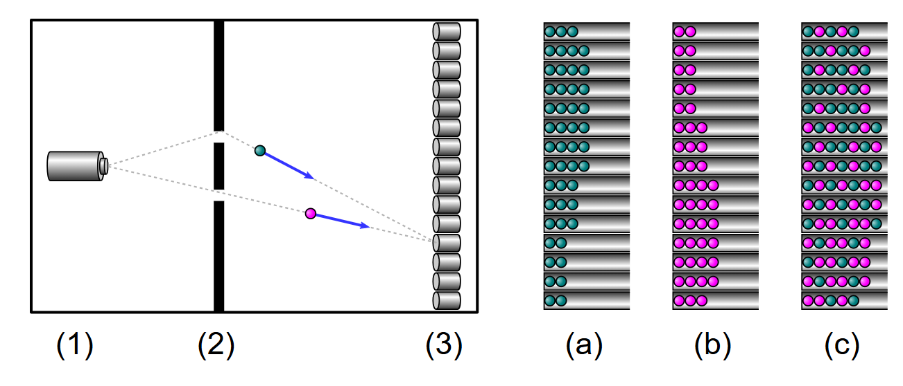
Jetzt kommt der zentrale Vergleich:
Klassische Teilchen addieren sich also ganz normal. Genau dieser einfache Vergleich macht den späteren Wellenfall so spannend.
Eine kohärente Welle (z. B. Laserlicht) trifft auf zwei sehr schmale, parallele Spalte. Dahinter steht ein Schirm, der weit genug entfernt ist, damit sich die Wellen ausbreiten und überlagern können.
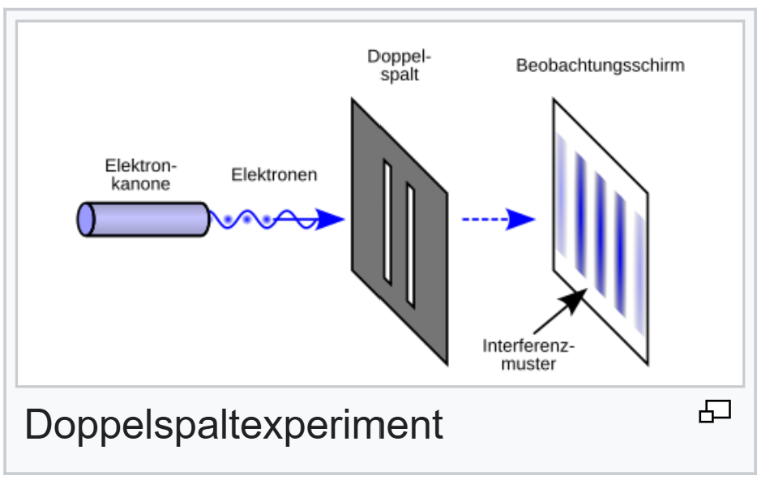
Das Muster bleibt gleich, egal wie wenige Teilchen man schickt. Selbst wenn immer nur ein einziges Teilchen unterwegs ist, baut sich das Interferenzbild langsam auf. Das wirkt fast magisch, ist aber ein zentraler Hinweis: Die Wahrscheinlichkeit verteilt sich wellenartig und erzeugt das Muster. Das Teilchen geht sozusagen durch beide Spalte gleichzeitig, denn die Wellen beider Spalte müssen sich überlagern, um ein Interferenzbild zu erzeugen.
Selbst bei sehr wenigen Elektronen entsteht das Muster nach und nach. Die Streifen sind kein Zufall, sondern Ausdruck der wellenartigen Wahrscheinlichkeitsverteilung. Man misst in diesem Versuch keine Teilcheneigenschaften des Elektrons, sondern seine Welleneigenschaft (eine Welle geht durch beide Spalte gleichzeitig). Das passt zu Louis de Broglies Idee (1924): Materie hat auch Wellencharakter. Jedem Teilchen ist eine Wellenlänge zugeordnet, \(\lambda = h/p\), wobei $p$ der Impuls und $h$ das Plancksche Wirkungsquantum ist. Aber dazu später mehr. Je nach Experiment zeigt Materie dann Teilcheneigenschaften (lokalisiert) oder Welleneigenschaften (ausgebreitet, mit Interferenz und Beugung).
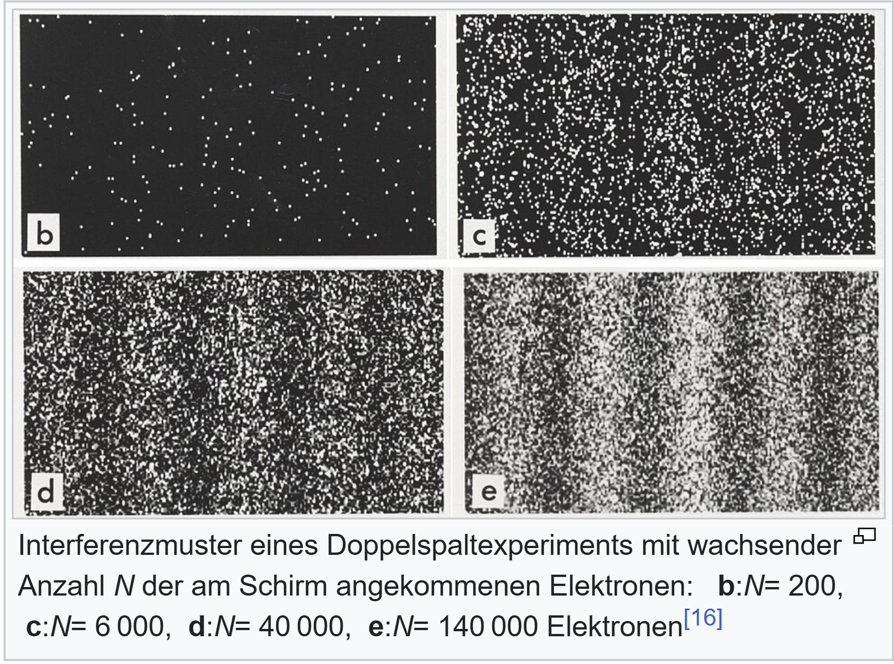
Sobald man die Apparatur so ergänzt, dass man messen kann, durch welchen Spalt ein Teilchen gegangen ist, verschwinden die Interferenzstreifen. Es reicht schon die physikalische Möglichkeit, den Weg zu bestimmen. Ob man die Messung später ausliest oder nicht, spielt keine Rolle.
Bei Photonen kann man diese Welcher-Weg-Information sogar ganz elegant über Polarisationsfilter realisieren: Ein Spalt bekommt eine Polarisation, der andere eine orthogonale. Dann entscheidet die Polarisation, welchen Weg das Photon genommen hat – und auf dem Schirm bleibt kein Interferenzmuster mehr übrig.
Jetzt hat sich der Versuch so verändert, dass man nicht mehr die Welleneigenschaft der Teilchen oder des Lichts misst, sondern die Teilcheneigenschaft. Ein Teilchen kann nur durch einen Spalt gehen, und damit kann es sich nicht mehr überlagern und es kommt keine Interferenz mehr zustande. Die Verteilung ist nun diejenie, die entstanden ist, als die Tennisbälle durch die zwei Spalte geflogen sind.
Besonders spannend: Selbst wenn die Entscheidung, den Weg zu markieren, erst nach dem Durchgang durch die Spalte getroffen wird, gilt das Gleiche. Entscheidet man sich dafür, die Welcher-Weg-Information nicht festzuhalten, erscheint das Interferenzmuster. Man kann das so deuten, als würde die Information nachträglich „ausradiert“ – daher der Name Quantenradierer.
Interferenz entsteht nur, wenn keine Welcher-Weg-Information verfügbar ist. Sobald der Weg prinzipiell bestimmbar ist, verschwinden die Streifen.
Schaue dir die drei Simulationen der Doppelspalte auf folgender Internetseite an:: Zur Internetseite
Das Doppelspaltexperiment zeigt: Zwei Spalte genügen, um aus einer einfallenden Welle ein Interferenzmuster zu erzeugen. Es ist der klassische Beweis für die Wellennatur des Lichts und der Startpunkt für die Quantenphysik.
Teste dein Verständnis, vertiefe zentrale Ideen und übertrage sie auf neue Situationen.
Heftaufschrieb 1: Beschreibe das Doppelspaltexperiment, einmal für klassische Teilchen und einam für Wellen oder quantenmechanische Teilchen, die auch Wellencharakter haben.
Heftaufschrieb 2: Zeichne das Muster, das entsteht, wenn klassische Teilchen durch den Doppelspalt fliegen, oder wenn quantenmechanische Teilchen durch den Doppelspalt fliegen und interferieren.
Die Regeln für Maxima und Minima gelten beim Doppelspalt genauso wie bei zwei Quellen.
Im letzten Kapitel hast du gelernt, wie sich zwei Wellen überlagern können. Je nachdem, wie ihre Schwingungen zueinander liegen, kommt es zu Verstärkung oder Auslöschung.
Hier fassen wir die wichtigsten Merksätze und Formeln noch einmal zusammen, damit du sie später direkt auf den Doppelspalt (und auch auf andere Anordnungen) übertragen kannst.
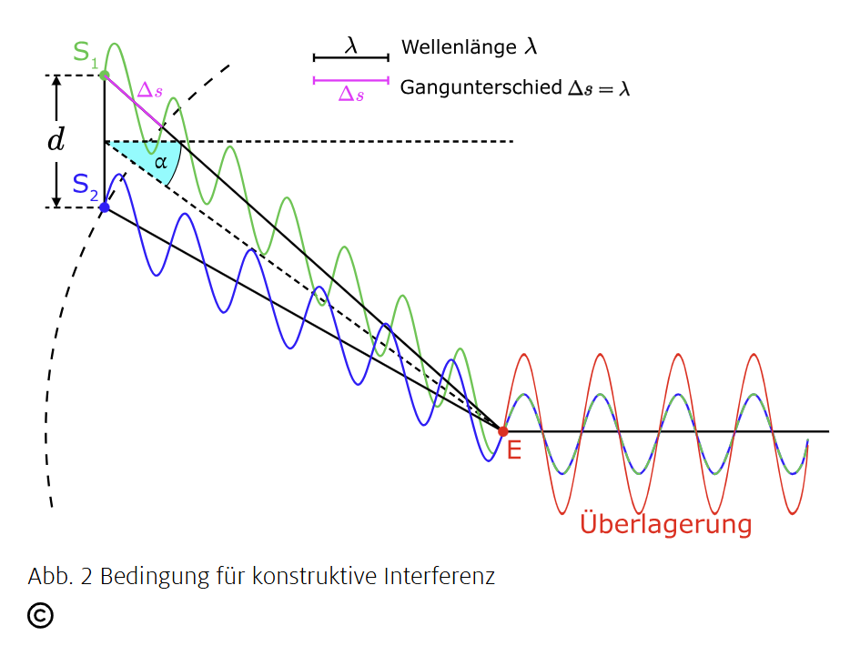
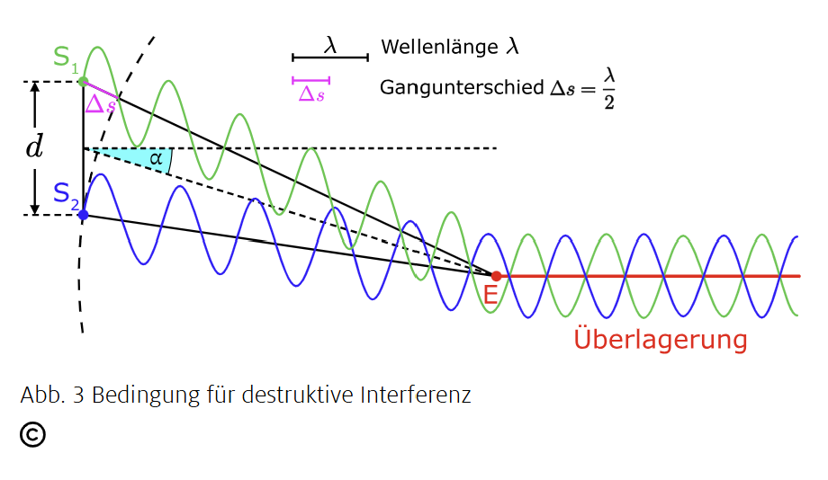
Konstruktive Interferenz: Die Wellen verstärken sich, wenn der Gangunterschied ein ganzzahliges Vielfaches der Wellenlänge ist: $\Delta s = k \cdot \lambda$ mit $k = 0, \pm 1, \pm 2, ...$
Destruktive Interferenz: Die Wellen schwächen sich ab oder löschen sich aus, wenn der Gangunterschied ein ungerades halbes Vielfaches der Wellenlänge ist: $\Delta s = \left(k - \tfrac{1}{2}\right)\cdot \lambda$ mit $k = \pm 1, \pm 2, ...$
Maxima und Minima entstehen nicht „am Spalt“, sondern durch die Überlagerung der Wellen im Bereich hinter dem Doppelspalt.
Beim Doppelspalt trifft eine einzelne einfallende Welle auf zwei schmale Spalte. An jedem Spalt entsteht dabei eine Teilschwingung. Man erhält also zwei Teilwellen, die aus derselben ursprünglichen Welle stammen.
Physikalisch ist das gleichbedeutend mit zwei kohärenten Quellen $S_1$ und $S_2$: Beide Wellen haben die gleiche Frequenz und eine feste Phasenbeziehung. Genau deshalb ist stabile Interferenz überhaupt möglich.
Am Schirm überlagern sich die beiden Teilwellen. Je nachdem, welchen Gangunterschied $\Delta s$ sie bis zu einem Punkt auf dem Schirm haben, entsteht dort entweder ein heller oder ein dunkler Streifen.
Da sich die Situation nicht von der Interferenz zweier kohärenter Quellen unterscheidet, gelten am Doppelspalt exakt dieselben Bedingungen:
Der Doppelspalt ist damit kein neues physikalisches Prinzip, sondern eine konkrete Anwendung der bereits bekannten Interferenz zweier Quellen.
Der Doppelspalt ist nichts anderes als die Überlagerung zweier Wellen aus zwei Quellen. Darum sind die Formeln für konstruktive und destruktive Interferenz 1:1 übertragbar.
Damit du die Geometrie wirklich sicher beherrschst, kommen hier noch einmal zwei Bilder mit den wichtigen Bezeichnungen (Abstände und Winkel). Schau sie dir in Ruhe an und versuche, jedes Symbol richtig zuzuordnen.
Achte dabei besonders auf diese Punkte:
Wenn du das Bild verstanden hast, solltest du erklären können, warum sich der Gangunterschied je nach Winkel (oder je nach Ort auf dem Schirm) verändert und wie dadurch Maxima und Minima entstehen.
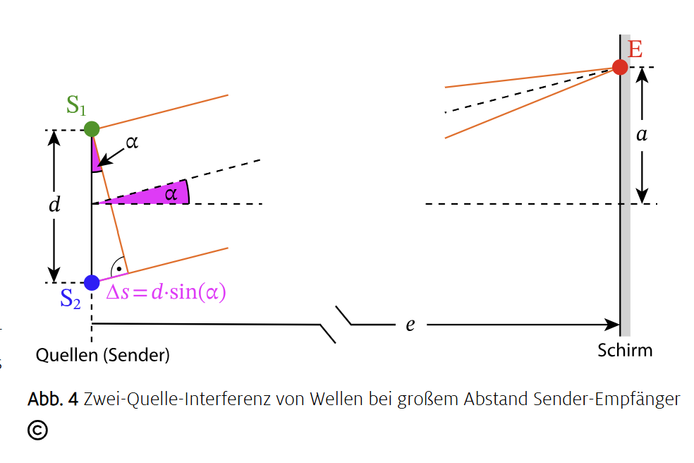
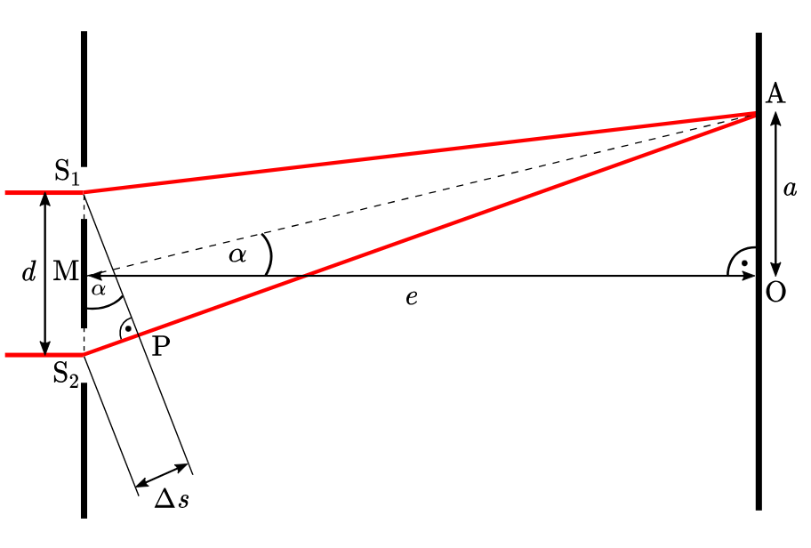
Die entscheidenden Größen sind:
Aus der Geometrie der Skizze folgt für den Punkt A:
$\sin(\alpha)=\dfrac{a}{\sqrt{e^2+a^2}}$, da $\quad \quad \sin(\alpha)=\frac{a}{\ell}\quad\quad$ und $\quad\quad \ell^2=e^2+a^2\quad\quad$
Für das kleine Interferenzdreieck gilt gleichzeitig:
$\sin(\alpha)=\dfrac{\Delta s}{d}$
Setzt du beide Beziehungen gleich, erhältst du die allgemeine Schirm-Geometrie:
$\Delta s=\dfrac{d\cdot a}{\sqrt{e^2+a^2}}$
Jetzt hast du gelernt: Der Gangunterschied am Schirm folgt direkt aus der Geometrie von d, e und a.
Liegt am Punkt Ak ein Maximum, dann heißt sein Abstand zur Mitte ak. Das Maximum k-ter Ordnung entsteht nur bei konstruktiver Interferenz:
$\Delta s_k=k\cdot\lambda$ mit $\;k=0,1,2,\dots$
Einsetzen in die allgemeine Geometrie aus Schritt 1 liefert:
$k\cdot\lambda=\dfrac{d\cdot a_k}{\sqrt{e^2+a_k^2}}$
Nach der Wellenlänge umgestellt ergibt sich die gesuchte Messformel:
$\lambda=\dfrac{d\cdot a_k}{k\cdot\sqrt{e^2+a_k^2}}$
Jetzt hast du gelernt: Mit dem Ort eines Maximums kannst du die Wellenlänge direkt bestimmen.
Für große Schirmabstände (e ≫ ak) sind die Winkel klein. Dann gilt näherungsweise:
\[ \sqrt{e^2+a_k^2}\approx e,\qquad \tan(\alpha)\approx\sin(\alpha),\qquad \tan(\alpha)=\frac{a}{e}. \]Damit werden die Formeln besonders einfach und praxistauglich:
Maxima: $\;a_k\approx\dfrac{e}{d}\cdot k\cdot\lambda$
Wellenlänge aus Maxima: $\;\lambda\approx\dfrac{d\cdot a_k}{e\cdot k}$
Maxima: $\;a_k \approx \dfrac{e}{d}\cdot k\cdot\lambda$ mit $\quad k = 0, \pm 1, \pm 2, ...$
Man spricht vom k. Maximum oder Maximum k. Ordnung. Das Nullte Maximum ist in der Mitte.
Minima: $\;a_k \approx \dfrac{e}{d}\cdot\left(k - \tfrac12\right)\cdot\lambda$ mit $\quad k = \pm 1, \pm 2, ...$
Man spricht vom k. Minimum oder Minimum k. Ordnung.
Hier siehst du ein typisches Interfernzmuster (in gelb) eines Doppelspalts:
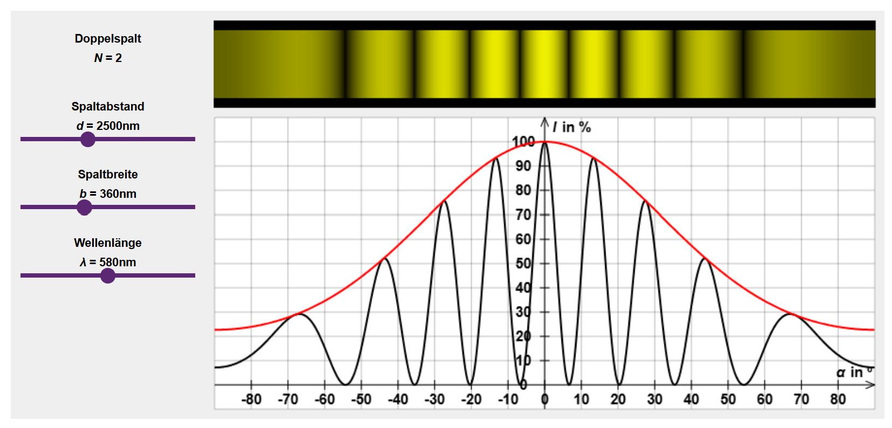
Das Bild hinter dem Doppelspalt ist deutlich breiter als das reine geometrische Schattenbild der beiden Spalte. Der Grund dafür ist, dass Licht an schmalen Öffnungen gebeugt wird.
Außerdem erkennt man im Bild abwechselnd helle und dunkle Bereiche. Diese entstehen dadurch, dass sich das Licht, das von den beiden Spalten ausgeht, auf dem Schirm überlagert und dabei interferiert. Deshalb spricht man beim Doppelspalt auch von einem Interferenzbild.
In der Mitte des Schirms siehst du einen besonders hellen Streifen. Diesen Streifen – genauer gesagt seine hellste Stelle genau in der Mitte – bezeichnen wir als das Hauptmaximum oder auch Maximum 0. Ordnung.
Rechts und links davon, symmetrisch zur Mitte, erscheinen weitere helle Streifen. Diese werden nach außen hin immer lichtschwächer. Ihre hellsten Stellen nennen wir – von innen nach außen – das 1. Maximum, 2. Maximum, 3. Maximum, … .
Zwischen jeweils zwei benachbarten Maxima liegen schmale dunkle Bereiche. Die dunkelsten Stellen dieser Bereiche bezeichnen wir – ebenfalls von innen nach außen – als das 1. Minimum, 2. Minimum, 3. Minimum, … .
Anhand der Formel für Maxima $\ a_k = \dfrac{e}{d}\cdot k\cdot\lambda\ $ und Minima $\ a_k = \dfrac{e}{d}\cdot\left(k - \tfrac12\right)\cdot\lambda\ $ von oben siehst du, dass die Abstände der Maxima/Minima auch mit der Wellenlänge $\lambda$ zusammenhängt. Und die Wellenlänge von Licht geht mit der Farbe einher.
In der Simulation kannst du nun wichtige Größen verändern: Zur Simulation
Beobachte dabei genau, wie sich das Beugungs- und Interferenzbild auf dem Schirm verändert und versuche, die Veränderungen mit den gelernten Zusammenhängen zu erklären (die Spaltbreite kommt noch).
Wiederhole die Formeln, wende sie an und übertrage sie auf neue Situationen.
Ein Sender emittiert zwei kohärente Schallwellen mit der Wellenlänge $\lambda = 3\,\text{m}$. Die beiden Quellen sind $d = 15{,}0\,\text{m}$ voneinander entfernt.
Jetzt versuchen wir zusammen die Lösung zu finden, Schritt für Schritt:
Ein Doppelspalt mit einem Spaltabstand $d=0{,}5\,\text{mm}$ wird mit monochromatischem Licht beleuchtet ($\lambda=650\,\text{nm}$).
Jetzt versuchen wir wieder die Lösung Schritt für Schritt:
Heftaufschrieb 3: Schreibe alle Formeln für die Maxima und Minima beim Doppelspalt auf.
Tipp: Benutze die Callout-Boxen.
Ziel: Du erarbeitest dir, was Beugung bedeutet, warum beim Einzelspalt Interferenz entsteht und wie die Minimum-Bedingung hergeleitet wird.
Wenn Licht doch geradlinig läuft, warum sieht man hinter einem schmalen Spalt ein hell-dunkel-Muster?
Beugung bedeutet: Eine Welle breitet sich nicht nur streng geradlinig aus, sondern fächert hinter Kanten und Öffnungen in den Schattenraum hinein auf. Das ist besonders gut sichtbar, wenn die Öffnung in der Größenordnung der Wellenlänge liegt.
Das Huygenssche Prinzip sagt: Jeder Punkt einer Wellenfront kann als Ausgangspunkt einer neuen, kreis- (2D) oder kugelförmigen (3D) Elementarwelle betrachtet werden. Die neue Wellenfront entsteht als Einhüllende dieser Elementarwellen.
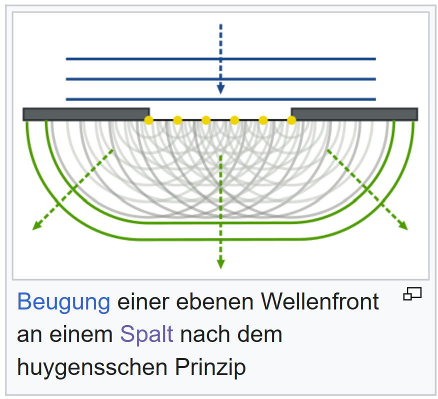
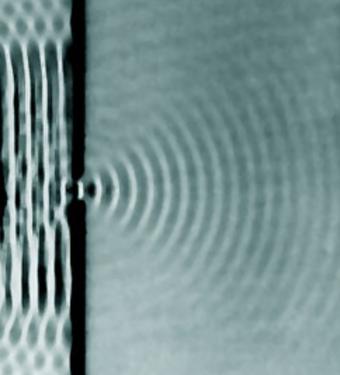
Wird die Wellenfront durch einen Spalt begrenzt, sieht man an den Rändern wieder die Kreiswellen. Da der Spalt jedoch eine gewisse Dicke hat, können auch die einzelnen Kreiswellen interferieren. Hinter dem Spalt überlagern sich dadurch viele Teilwellen mit unterschiedlichen Phasen. Genau diese Überlagerung erzeugt Richtungen mit hoher und niedriger Intensität.
Das wirkt erst mal paradox: Interferenz kennt man vom Doppelspalt – aber beim Einzelspalt ist nur eine Öffnung da. Der Schlüssel ist: Der Spalt hat eine endliche Breite \(l\). Innerhalb dieser Breite können viele Punkte als Quellen von Elementarwellen wirken. Diese Elementarwellen können sich am Schirm gegenseitig verstärken oder auslöschen.
Stell dir den Spalt der Breite \(l\) vor. Du teilst ihn in zwei Hälften: obere Hälfte und untere Hälfte. Du schaust auf einen Punkt \(P\) auf dem Schirm, der unter dem Winkel $\alpha_1$ zur Mitte liegt.
Wenn der Gangunterschied zwischen Strahlen aus der oberen und unteren Kante des Spalts genau \(\lambda\) ist, dann findet in der oberen Hälfte für jeden Teilstrahl ein Partnerstrahl in der unteren Hälfte, der um \(\lambda/2\) verschoben ist. Diese Paare löschen sich dann paarweise aus → Minimum.
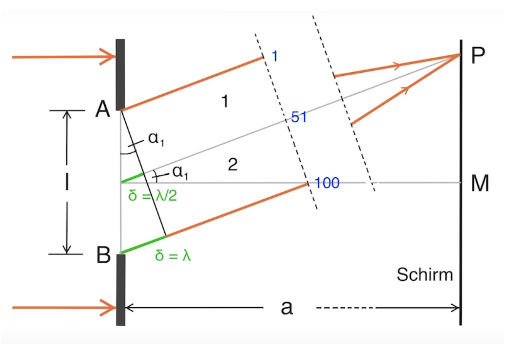
\[ \sin(\alpha_k)=\frac{k\,\lambda}{d},\quad k= \pm 1,\pm 2,\pm 3,\dots \]
Hinweis: Da \(\sin(\alpha)\le1\), gibt es nur Minima solange \(k\lambda\le d\).
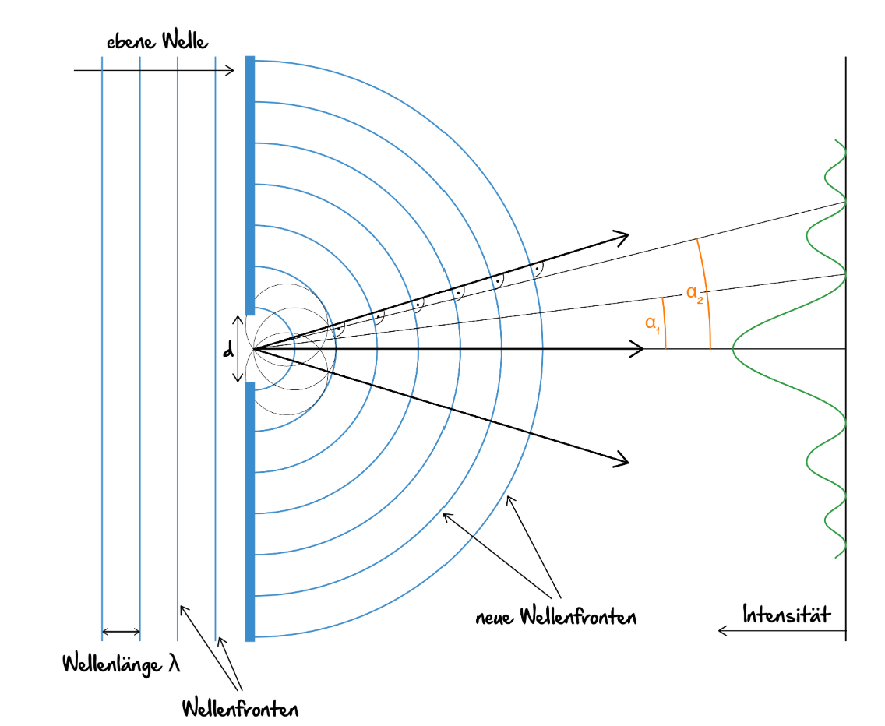
Ist dir aufgefallen, wie ähnlich die Formel zu der vom Doppelspalt ist?
Und jetzt wollen wir die Formel für die Maxima beim Einzelspalt herausfinden:
Natürlich ist das Hauptmaximum bei $\alpha=0^\circ$
Und für die Nebenmaxima gilt: sie liegen immer zwischen zwei Nebenminima.
Somit ist es genau andersherum wie beim Doppelspalt! Und es gilt:
\[ \sin(\alpha_k)=\frac{\left(k+\frac{1}{2}\right)\,\lambda}{d},\quad k= \pm 1,\pm 2,\pm 3,\dots \]
Hinweis: Da \(\sin(\alpha)\le1\), gibt es nur Maxima solange \(\left(k+\frac{1}{2}\right)\lambda\le d\).
Achtung: Hier unterscheidet sich die Formel zum Doppelspalt, in der Formel vom Doppelspalt steht ein Minus $sin(\alpha_k)=\frac{\left(k-\frac{1}{2}\right)\lambda}{d},\quad k=\pm 1,\pm 2, ...$.
Das bedeutet, dass das erste Maximum beim Einzelspalt viel breiter als beim Doppelspalt ist.
Um die Bedingungen für Maxima und Minima beim Einzelspalt und beim Doppelspalt direkt miteinander vergleichen zu können, betrachten wir eine bewusst vereinfachte Ausgangssituation:
Da sich die Formeln formal sehr ähneln, setzen wir den Spaltabstand \(d\) des Doppelspalts gleich der Spaltbreite \(d\) des Einzelspalts. Die endliche Breite der einzelnen Spalte im Doppelspalt wird dabei zunächst vernachlässigt, sodass wir uns ausschließlich auf die Interferenzbedingung konzentrieren können.
Links ist der Doppelspalt dargestellt, rechts der Einzelspalt – beide mit derselben charakteristischen Länge \(d\).
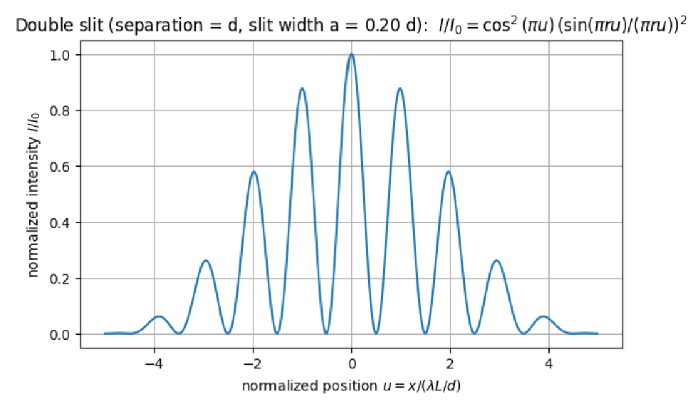
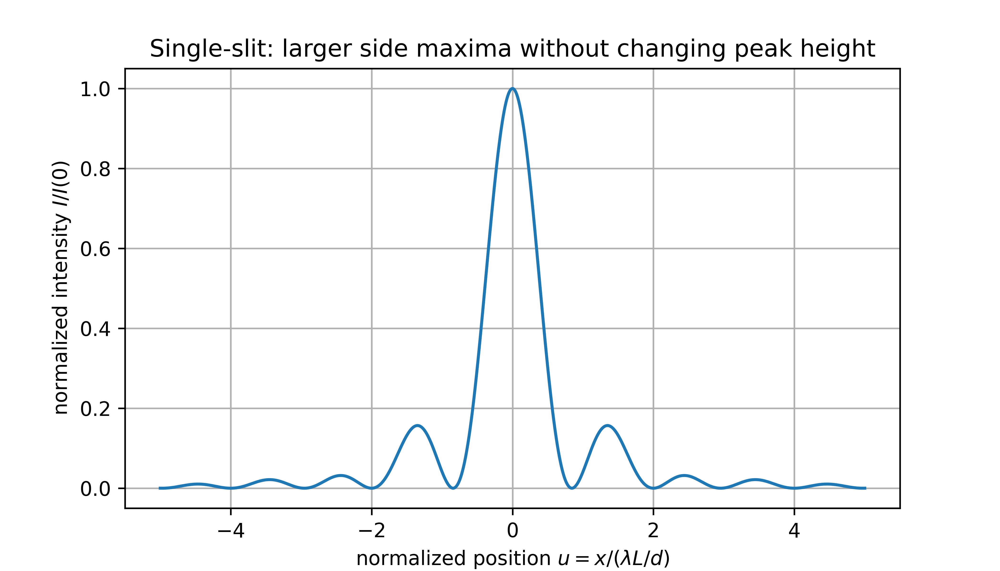
Auffällig ist zunächst, dass das zentrale Maximum des Einzelspalts deutlich breiter ist als das des Doppelspalts.
Betrachtet man die Lage der Extremstellen genauer, erkennt man eine systematische Beziehung: Das erste Minimum des Einzelspalts fällt genau mit dem ersten Maximum des Doppelspalts zusammen (hier beispielsweise bei \(u=1\)), das zweite Minimum des Einzelspalts mit dem zweiten Maximum des Doppelspalts (\(u=2\)) usw.
Umgekehrt liegt das erste Nebenmaximum des Einzelspalts an derselben Stelle wie das zweite Minimum des Doppelspalts – und entsprechend setzt sich diese Zuordnung fort.
Das erste Minimum des Doppelspalts besitzt jedoch kein Gegenstück beim Einzelspalt. Gerade deshalb ist das zentrale Maximum des Einzelspalts deutlich breiter: Es reicht bis zum ersten Einzelspalt-Minimum, das weiter außen liegt als das erste Doppelspalt-Minimum.
Jetzt setzt du die Herleitung in Zahlen um, arbeitest mit der Intensitätsfunktion und prüfst die Zusammenhänge experimentell in der Simulation.
Typische Versuchssituation: Abstand Spalt–Schirm \(e = 2{,}50\,\text{m}\), Abstand vom Hauptmaximum zum 1. Minimum: \(a = 3{,}2\,\text{cm}\), Laserwellenlänge \(\lambda = 633\,\text{nm}\).
Gesucht: Breite des Spalts $d$
Für \(k=1\) gilt \(d\sin(\alpha_1)=\lambda\). Bei kleinen Winkeln: \(\sin(\alpha_1)\approx\tan(\alpha_1)\approx a_1/e\). Damit folgt direkt:
\[ d \approx \frac{e\,\lambda}{a_1} \ = \ \frac{2,5 m \cdot 633 \cdot 10^{-9}m}{0,032 m}\ =\ 4,9 \cdot 10^{-5}m \]
Die Breite des Spalts beträgt $ 4,9 \cdot 10^{-5}m$.
Allgemein für die Minima-Lage:
\[ a_k \approx \frac{e\,k\,\lambda}{d} \]
Für den Einzelspalt wird die Intensität häufig durch
\[ I(\alpha)=I_0\left(\frac{\sin\beta}{\beta}\right)^2,\qquad \beta=\frac{\pi\,d\,\sin\alpha}{\lambda} \]
beschrieben. Minima liegen dort, wo \(\sin\beta=0^\circ\) (außer bei \(\beta=0^\circ\)). Das passt zur Bedingung \(d\sin(\alpha_k)=k\lambda\). Diese Formel musst du nicht „auswendig“ können – aber du kannst sie benutzen, um Muster zu erklären.
Experimentiere mit \(\lambda\), \(d\), \(e\) und dem Winkel \(\alpha\). Vergleichssimulation: LEIFI-Einzelspalt
Die Effekte des Einzelspaltes sind auch beim Doppelspalt sichtbar. Da ein Doppelspalt aus zwei Einzelspalten besteht, ist das Interferenzmuster der Einzelspalte auch beim Doppelspalt sichtbar – einige Maxima sind sehr lichtschwach oder fehlen komplett.
Man kann auch sagen: beim Doppelspalt überlagert sich das Doppelspalt-Interferenzmuster mit der „Hüllkurve“ des Einzelspalts: Manche Doppelspalt-Maxima werden sehr schwach oder fehlen, weil sie genau in ein Einzelspalt-Minimum fallen.
Hier siehst du die Überlagerung aus Doppelspalt-Interferenz und der Einzelspalt-Hüllkurve. Du kannst sowohl den Spaltabstand \(g\) (Mitte-Mitte) als auch die Spaltbreite \(b\) der einzelnen Spalte ändern.
\[ I(\alpha)=I_0\left(\frac{\sin\beta}{\beta}\right)^2\cos^2\delta,\quad \beta=\frac{\pi b\sin\alpha}{\lambda},\quad \delta=\frac{\pi g\sin\alpha}{\lambda}. \]
Heftaufschrieb 4: Beschreibe die Beugung am Einzelspalt und warum auch hier ein Interferenzmuster entsteht.
Heftaufschrieb 5: Schreibe alle Formeln für die Maxima und Minima beim Einzelspalt auf.
Tipp: Benutze die Callout-Boxen.
Jetzt erweiterst du den Doppelspalt auf viele gleichabständige Spalte und nutzt das als Messmethode für Wellenlängen.
Beim Vielfachspalt überlagern sich nicht nur zwei, sondern viele Teilwellen. Dadurch werden die hellen Hauptmaxima deutlich schärfer und die dunklen Bereiche dazwischen ausgeprägter.
Du kennst vom Doppelspalt bereits ein regelmäßiges Interferenzmuster. Erhöhst du die Spaltzahl \(N\), werden die Hauptmaxima immer schmaler und intensiver. Gleichzeitig treten zwischen zwei Hauptmaxima Nebenmaxima mit deutlich geringerer Helligkeit auf.
Für sehr große Spaltzahlen (\(N\gg1\)) erhältst du sehr scharfe Hauptmaxima, während dazwischen fast überall destruktive Interferenz dominiert.
Zwischen zwei Hauptmaxima liegen immer \(N-1\) Minima und \(N-2\) Nebenmaxima.
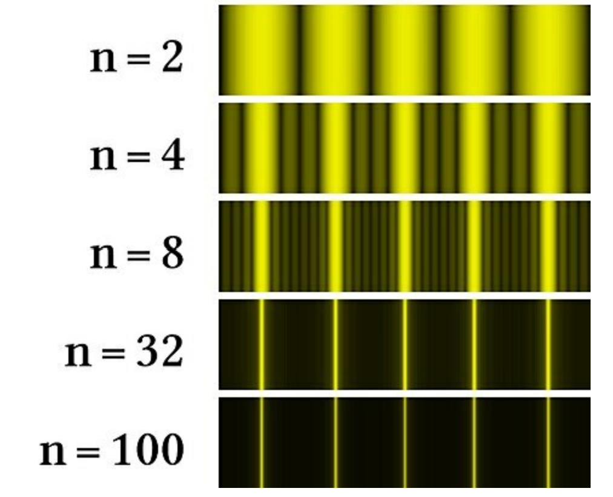
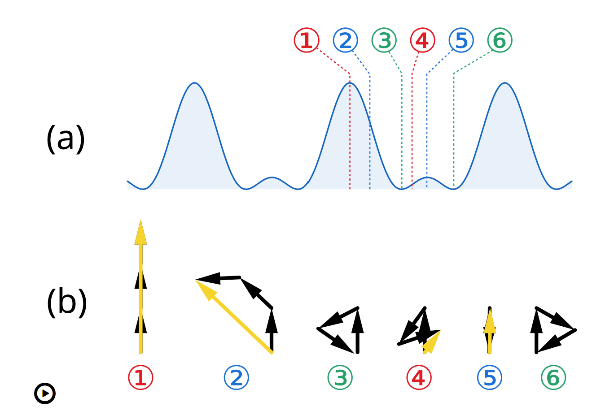
Um zu verstehen, warum Nebenmaxima entstehen und Hauptmaxima schärfer werden, hilft die Zeigerdarstellung der Amplituden. Dazu schauen wir uns einen Dreifachspalt an, also betrachten wir drei Zeiger:
Für ein Beugungsgitter mit Gitterkonstante \(g\) (Abstand benachbarter Spaltmitten) gilt für die Hauptmaxima:
\[ \sin(\alpha_k)=\frac{k\lambda}{g},\qquad k=0,\pm1,\pm2,\dots \]
Oft ist statt \(g\) die Anzahl der Linien pro Millimeter \(n\) gegeben. Dann gilt:
$ g=\frac{1}{n} \qquad $ und somit $\qquad \sin(\alpha_k)=k \cdot n \cdot\lambda,\qquad k=0,\pm1,\pm2,\dots$
Jetzt hast du das gelernt: Die Lage der Hauptmaxima wird durch \(g\), \(\lambda\) und die Ordnung \(k\) festgelegt.
Misst du auf dem Schirm den Abstand \(a_k\) des \(k\)-ten Maximums zur Mitte bei Schirmabstand \(e\), dann ist \(\tan(\alpha_k)=a_k/e\). Exakt folgt:
\[ \lambda=\frac{g}{k}\sin\!\left(\arctan\!\left(\frac{a_k}{e}\right)\right) \]
Für kleine Winkel (\(e\gg a_k\)) darfst du näherungsweise setzen \(\sin(\alpha_k)\approx\tan(\alpha_k)\approx a_k/e\):
\[ \lambda\approx\frac{g\,a_k}{k\,e} \]
Jetzt hast du das gelernt: Mit \(g\), \(e\), \(k\) und \(a_k\) kannst du eine unbekannte Wellenlänge bestimmen.
Verändere \(N\) (Spaltzahl), \(g\), \(b\) und \(\lambda\). Beobachte, wie Hauptmaxima schärfer werden und wie sich ihre Lage ändert. Vergleich: LEIFI: Vielfachspalt und Gitter
\[ I(\alpha)\propto\left(\frac{\sin\beta}{\beta}\right)^2 \left(\frac{\sin(N\delta)}{N\sin(\delta)}\right)^2,\quad \beta=\frac{\pi b\sin\alpha}{\lambda},\quad \delta=\frac{\pi g\sin\alpha}{\lambda}. \]
Auftrag: Schau dir die Simulation systematisch an. Verändere nur \(N\), halte die anderen Regler erst einmal konstant und notiere deine Beobachtungen.
Wir konzentrieren uns auf die Änderung des Schirmbildes in Abhängigkeit von der Anzahl der Spalte und stellen fest:
Jetzt hast du das gelernt: \(N\) steuert vor allem Schärfe und Kontrast, nicht die Position der Hauptmaxima.
Jetzt hast du das gelernt: Ein Gitter macht Maxima schärfer und erlaubt eine präzise Bestimmung von \(\lambda\).